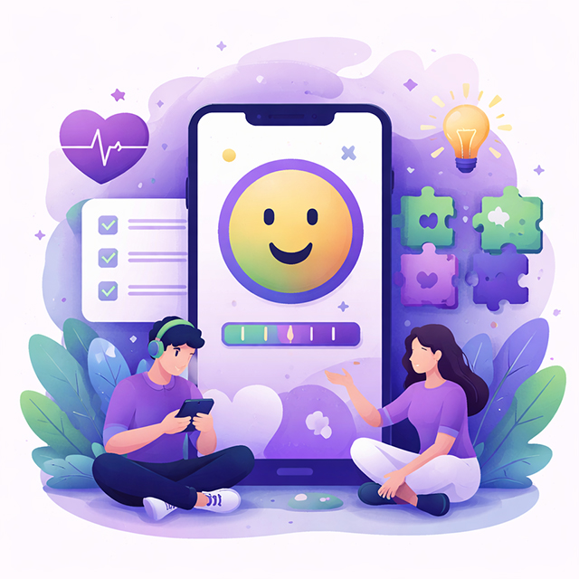
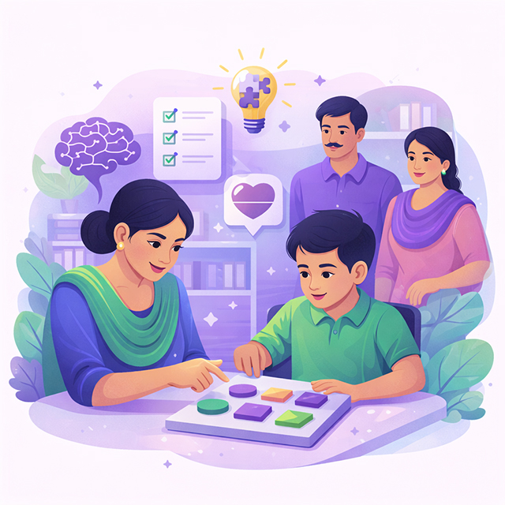
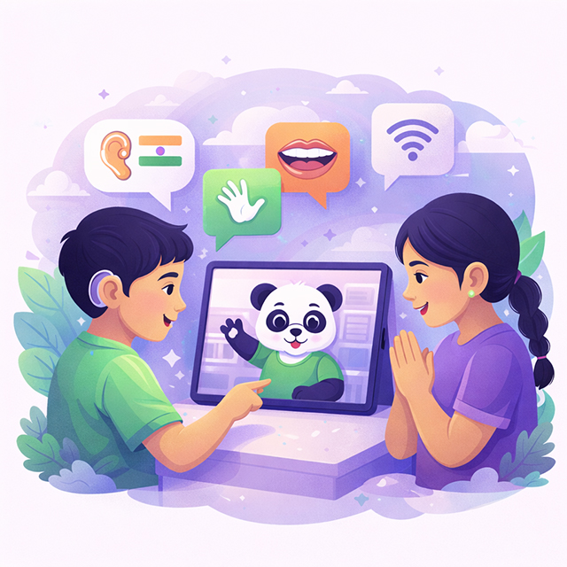
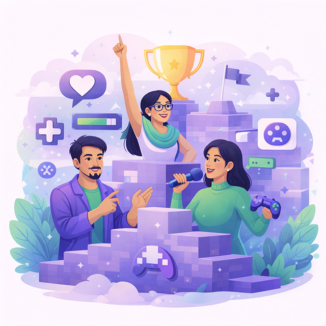

Contact Us


Mental well-being is a critical aspect of overall health, particularly for college-going students, who face increasing levels of stress, anxiety, and depression. The Oxford Happiness Questionnaire (OHQ) has been a standard tool to assess mental health in multiple contexts, including educational settings. However, the self-reported nature of the OHQ leads to challenges like lack of engagement and the occurrence of biases. Conversely, gamification is a concept that has proven to be effective in increasing engagement. Therefore, this study proposes a novel approach by incorporating gamification strategies with OHQ to enhance user engagement and assess the mental well-being of college-going students. A gamified application called “The Mirror” has been developed using a ‘research-through-design’ approach. The study utilized a mixed-method methodology to compare the traditional OHQ with the gamified application in terms of user engagement and experience. Results from a pilot study indicate that the gamified OHQ increased engagement and provided a more enjoyable and personalized assessment experience compared to the traditional format. The findings suggest that integrating gamification into the OHQ can improve its efficacy as a self-guided questionnaire, making it more effective in assessing mental well-being. Future research with larger sample sizes and real-world testing is recommended to further refine the gamified application and validate its effectiveness.

Children with visual impairment (VI) face significant challenges in experiencing inclusive play due to limited accessibility to games. This study explores how Voice User Interfaces (VUIs), specifically Amazon's Alexa, can facilitate inclusive play experiences among visually impaired and sighted children. We conducted contextual inquiry studies and a series of co-design workshops with special educators and students with mixed visual abilities, identifying key challenges and deriving opportunities for game design on VUI. We shared a game prototype demonstrating a dynamic and inclusive play experience with a VUI in a low-resource environment. Through evaluation and testing, design insights and challenges are shared with the game development community, which will help them to develop accessible games relevant to Indian schools.

Language is crucial for a child’s development, especially for those with Hearing Impairment (HI), making speech and language acquisition challenging. Early intervention positively impacts language development in HI children, but challenges persist due to limited resources and unmet demand in India. While auditory and speech training is given to young children for mainstream integration, formal therapy accessibility is limited by geographical and socio-economic constraints. This paper introduces a tablet-based application for HI children (0–48 months) and facilitators, enhancing verbal language development in Hindi. It involves initial field visits that identified challenges faced by HI preschoolers, leading to the design of a physical toolkit with three speech therapy games. These games focused on auditory participation, lip-speech cue recognition, and articulation, tested with 10 participants. Building on it, expert consultations shaped a comprehensive four-stage therapy model for Hindi language learning, covering auditory skills, verbal comprehension, speech, and language development. Utilizing the four-stage model, the digital application Pachi was developed. Aimed at a broader audience without speech therapist access, it offers 10–12-min daily modules tailored to the ISD scale. A sample module for 13–15 months ‘Hearing Age’ involves four games aligned with the four stages - focusing on auditory training, vocabulary building, pronunciation, and articulation.

This workshop brings together emerging and established leaders in the Games & Play research community to reflect on their leadership journeys, exchange best practices, and collectively envision the future of leadership in the field. As the community continues to expand across disciplines, geographies, and cultures, there is a growing need for dialogue around how we lead, support, and sustain playful, inclusive, and forward-thinking research groups. Through a series of interactive sessions—including show-and-tell reflections, group discussions, campus walks, and co-creative mapping—we aim to surface key challenges, playful practices, and shared needs among leaders. The outcomes of the workshop will include a collaboratively generated Playful Leadership Map, a community reading list, and the foundation for an open-source Handbook of Playful Leadership. This gathering marks the beginning of an ongoing network committed to shaping the next generation of leadership in Games & Play.